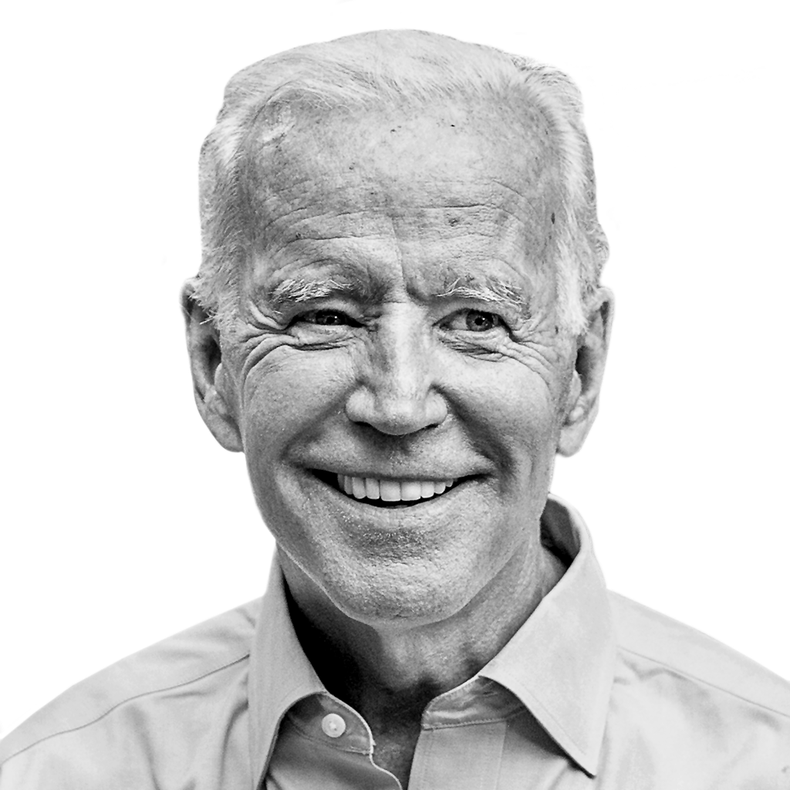

Genesis for the Project
What if there was a way to visualize the frequency and relevance of certain keywords or phrases from a leader's tweets? What insights could be drawn from that?
The inspiration for the project came from second year Harvard Kennedy School student Will Huang. He is currently working on a year-long research project on how best to protect and secure the Open Internet. One of the most significant threats to the Open Internet is verifying if information from figures of authorities, including world leaders, can be regarded as factual and accurate.
Given that the four members working together on the project come from the U.S., Mexico, India, and Turkey, we wanted to focus on the leaders of those respective countries.
About the Leaders
Joseph R. Biden

Joseph (Joe) Robinette Biden Jr. is the 46th and current President of the United States. He assumed office on January 20, 2021. Joe Biden briefly worked as an attorney before turning to politics. He became the fifth-youngest U.S. senator in history as well as Delaware's longest-serving senator. His 2008 presidential campaign never gained momentum, but Democratic nominee Barack Obama selected him as his running mate, and Joe Biden went on to serve two terms as the 47th vice president of the United States. In 2017, at the close of his administration, President Obama presented Joe Biden with the Presidential Medal of Freedom. Two years later, Biden launched his campaign for U.S. president and was elected as the 46th President of the United States on November 3, 2020.
Learn MoreShri. Narendra Modi
Narendra Damodardas Modi serves as the 14th and current Prime Minister of India. He is a Member of Parliament representing Varanasi, Uttar Pradesh, and is the leader of the Lok Sabha (the lower house of the Parliament). Narendra Modi assumed office as Prime Minister on May 26, 2014 and belongs to the Bharatiya Janata Party. He is the first Prime Minister born after India's independence in 1947, and the second Prime Minister not belonging to the Indian National Congress to win two consecutive majorities in the Lok Sabha. Prior to his tenure as the Prime Minister, Narendra Modi served as the Chief Minister of Gujarat (2002-2014).
Learn MoreRecep Tayyip Erdoğan
Recep Tayyip Erdogan is a Turkish politician who has served as prime minister (2003 to 2014) and the 12th and current president (2014 to present) of Turkey. Previously, he served as mayor of Istanbul from 1994 to 1998 and founded the Justice and Development Party (AKP) in 2001. Erdogan comes from an Islamist political background and self-describbes as a conservative democrat. During his administration, he has advanced socially conservative and populist policies. In 2017, Erdogan led a constitutional referendum that replaced the existing parliamentary system of government with a presidential system of which he would become the first leader. He has been the de facto ruler of Turkey for almost 20 years.
Learn More
Andrés Manuel López Obrador
Andrés Manuel López Obrador, commonly referred to as AMLO, is the 65th and current president of Mexico. He is the founder and the most prominent member of the ruling party, National Regeneration Movement (MORENA). Before assuming the presidency on December 1st, 2018, he led three presidential campaigns in 2006, 2012, and 2018. After two unsuccessful runs, he became Mexico's first center-left progressive president defeating candidates from the previous ruling parties, PRI (center) and PAN (right-wing). From 2000 to 2005, AMLO served as the Head of Government of Mexico City, position from which he consolidated his status as one of Mexico's most popular public figures in recent decades.
Learn More
Technical Tools
Data
Our project team wrote a Python script that used snscraper to scrape Twitter data from the four world leaders and generate a CSV text file with six headers: Text (contents of the tweet), User (the Twitter user handle), Date (date of the tweet), Favs (number of favorites for the tweet), Retweets (number of retweets for the tweet), and Replies (number of replies for the tweet). If you would like to scrape Twitter data for any user over a specified period of time, follow the instructions in the GitHub repository of the project.
About the Word Clouds
The word cloud was created using the WordCloud Generator by MonkeyLearn. The WordCloud Generator allows any user to upload a text file and it will generate a visual representation of the text, in which the words appear bigger the more often they are mentioned. The Generator from MonkeyLearn is programmed with an algorithm to automatically detect collocations, which are words that often go together. This algorithm allows for phrases to be generated instead of simply single words, and often provide more context.
Once a user uploads a text file, the WordCloud Generator allows the user to sort the words and phrases by relevancy or frequency. Sorting by frequency will put the words/phrases that appear the most often at the top. MonkeyLearn uses a relative frequency, which is frequency normalized by the maximum value in which valid terms in other terms are taken into account. For example, if you have “dog” and “hot dog”, the weight of “dog” is removed from the weight of “hot dog”. The frequency of the word “dog” is then calculated only when it appears as a single word, and not as a collocation.
The unique feature of the WordCloud Generator is the ability to sort phrases by their relevance scores. The score is generated in part by reducing words to their word stem, base, or root form in a process called stemming. For example, the algorithm reduces the words “fishing”, “fished”, and “fisher” to the stem “fish”. The algorithm first calculates how frequently a stemmed term occurs in the document divided by the total number of terms in the document - this produces the term frequency (TF) for each term. The TF is then multiplied by the Inverse Document Frequency (IDF), a weight that indicates how often a word is used across documents. The more often a term appears, the lower its IDF score. The resulting TF-IDF score, or the relevancy score, for each term, takes into account both the “frequency” and “uniqueness” of the term. MonkeyLearn also prevents common English stopwords from a fixed list, such as “the” or “for”, from appearing in the world cloud.
Because the WordCloud Generator algorithm pulls from an English dictionary of IDFs and an English list of stopwords, the word clouds generated from English text files will generally include fewer common stopwords than non-English text files and include more unique terms and phrases for further analysis.
To learn more about how the Word Cloud Generator works, please consult MonkeyLearn’s FAQ page.
D3 Bar Chart Visualization
The interactive D3 bar chart was adapted from an existing chart on Observable. Observable provides a data visualization platform for developers, data scientists, journalists, and educators to explore, analyze, and visualize data on the web together. It enables users to create complex graphs, charts, and other visual representations of data. Observable is a Jupyter Notebook-like tool that makes it easy to quickly run JavaScript code in cells so you can see what you're doing in real-time.
Observable notebooks are written in JavaScript, but include a few changes. This notebook, and every Observable notebook, is composed of cells. These are basic building blocks for the entire document, and can contain text, charts, images, and more. The code for the notebook is contained in cells, and to know how to open, close, and evaluate them. Cells come in two primary forms: expressions and blocks. Expression cells are concise and are intended for simple definitions. Blocks are surrounded by curly brackets and are intended for more complex definitions, such as ones involving local variables or loops. To learn more about Observable, click here.
To create the visualization, the project team used an existing Observable interactive chart showing U.S. musical artist Taylor Swift’s most used words from her lyrics. This tutorial gave a high-level perspective on the steps required to create a similar visualization for our use case. In addition, the project team forked the code for this interactive chart and manipulated the data as well as the code to fit Twitter data of the four world leaders we chose to analyze.
Limitations to this methodology included the fact that an existing interactive chart was adapted. Additionally, we used to stopwords to ensure that the text analysis did not throw up common conjunctions, pronouns, and punctuations. The English stopwords were sourced from existing code in the Taylor Swift interactive chart. We used the open-source resources available on internet for Turkish, Hindi, and Spanish stopwords. These resources were not exhaustive or entirely accurate and manual additions were made with the team’s judgement.
To experience the interactivity element of the bar chart for each leader, vist the links below:
To learn more about how the D3 bar chart was built and to access the resources we used, please consult this project's GitHub page.
D3 Ternary Plot Visualization
The interactive D3 bar chart was adapted from Torben Jansen's notebook D3 Ternary Plot. To learn more about Observable, please see the "D3 Bar Chart Visualization" section above.
The original notebook was forked four times, each for one of the Twitter users in the analysis. Within each of the new notebooks, the original notebook's dataset was replaced with a dataset that included the interactions of each of the four user's body of tweets for 2021. The dataset included four variables: 1) a number tag for each tweet, 2) the percentage of "likes" relative to the total number of interactions, 3) the percentage of "retweets", and 4) the percentage of replies.
Every tweet was mapped in the ternary plot assigning a different metric to each of the three axis, which ranged from 0 to 100%. Finally, minor labeling and color changes were made. To explore each plot individually and access its code, visit the links below:
GitHub Repository
This website was created as a final project for the DPI 691M: Programming and Data for Policymakers course at Harvard Kennedy School. Its code is public and can be accessed in this repository.